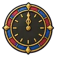
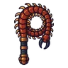
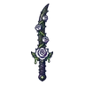
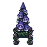

ย่านวิหาร
ดูบนแผนที่และวิธีไป วางแผนฟาร์ม
ทุ่งในเมืองหอระฆัง · Lv 92–99
ชั้นล่าง / ดันเจี้ยน
โรงหุ่นใต้วิหาร ชั้น 1 · ห้องขัง · หอระฆัง ชั้น 1 · สวนรูปปั้นขาว
เดินต่อไป
มอนในแมพ (5)
| มอน | Lv | ธาตุ | โซน |
|---|---|---|---|
| 92–96 | พิษ | ย่านคนจนหลังรั้ว | |
| 92–99 | ศักดิ์สิทธิ์ | ย่านคนจนหลังรั้ว · ลานระฆังขาว | |
| 92–99 | ศักดิ์สิทธิ์ | ย่านคนจนหลังรั้ว · ลานระฆังขาว | |
| 99–99 | มืด | ||
| คาร์ดินัลเซเวริน บอสเนื้อเรื่อง | 99–99 | ศักดิ์สิทธิ์ |
อุปกรณ์ที่ดรอปในแมพนี้
| ของ | โอกาสสูงสุด |
|---|---|
 โล่หน้าปัดเที่ยงคืน | 1% |
| 0.5% | |
| 0.25% | |
| 0.25% | |
 แส้ตะขาบยักษ์ | 0.25% |
| ชุดนักบินฟากฟ้า | 0.15% |
| ชุดจอมโจรทองคำ | 0.15% |
| 0.12% | |
 ดาบคู่กุหลาบพิษ | 0.12% |
 คาทาร์ดอกฟ็อกซ์โกลฟ | 0.12% |
| 0.12% | |
| 0.12% | |
| 0.12% | |
| 0.06% | |
| 0.06% |